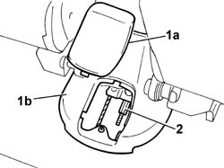
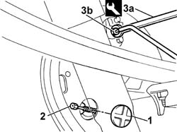
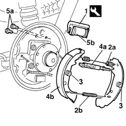
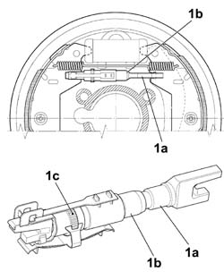

3320B20 Rear brake shoe CYLINDER (one) left or right - Replace.
- Path
- Procedures > 33 BRAKES > 3320 DRUM BRAKES > 3320B REAR DRUM BRAKES > 3320B20 Rear brake shoe CYLINDER (one) left or right - Replace.
- Kind
- repair procedure (removal / refitting; the operation number is the code)
- Applies to
- all engines; all production periods
- Interactive page
- https://sloeber94.github.io/elrnDB-fDbl/en/#/2584634
Applies to: all engines; all production periods
 Removing
Removing
 Refitting
RefittingRemove a front wheel, proceed as in the example
Op. 4450B06 LEFT REAR WHEEL - R.R..
Op. 3320B30 LH OR RH REAR BRAKE DRUM (ONE) - R.R.
1. Remove rear trim tunnel (1a) of central tunnel (1b).
2. Loosen the adjustment nut for the handbrake cable.

Applies to: all engines; all production periods
Raise the lift.
1. Remove the protective cover.
2. Disconnect the handbrake cable from the drum.
3. Using the spanner (3a), disconnect the rigid connector (3b) for the rear brake pipe.
 | Name | Country |
|---|---|---|
3a | Box wrench for brake fittings | 1.856.132.000 |

Applies to: all engines; all production periods
1. Position the tool on the wheel cylinder.
| Name | Country |
|---|---|---|
1 | Bracket | 1.872.257.000 |
2. Using the specific pliers, remove the shoe return springs (2a) and (2b).
| Name | Country |
|---|---|---|
- | Pliers | 1.881.136.000 |
3. Remove the rear brake shoe return springs.
4. Remove the clearance recovery device (4a) together with the two rear brake shoes (4b).
5. Undo the fixing bolts (5a) and remove the shoe cylinder (5b).

Applies to: all engines; all production periods
Refitting
RemovingPosition the special tool on the new shoe cylinder.
| Name | Country |
|---|---|---|
- | Bracket | 1.872.257.000 |
Tighten the shoe cylinder fixing bolts to torque.
 | Fastening | Component | Ø | Value (daNm) |
|---|---|---|---|---|
- | Bolt | REAR BRAKE DRUM CYLINDER | M6 | 1 |
Position the clearance recovery device together with the rear brake shoes.
Position the rear brake shoe retaining springs.
Position the shoe return springs using the appropriate tool.
| Name | Country |
|---|---|---|
- | Pliers | 1.881.136.000 |
1. When new brake shoes are fitted, bring the adjustment screw (1a) and link (1b) of the shoe wear take-up device into contact with the shoe (device fully tightened), then unscrew toothed collar (1c) by half a turn.

Applies to: all engines; all production periods
Remove the cylinder retaining tool.
| Name | Country |
|---|---|---|
- | Bracket | 1.872.257.000 |
Using a special spanner, tighten the rigid connector for the rear brake pipe.
| Name | Country |
|---|---|---|
- | Box wrench for brake fittings | 1.856.132.000 |
| Fastening | Component | Ø | Value (daNm) |
|---|---|---|---|---|
- | Bolt | RIGID PIPE TO REAR CYLINDERS | M10 x 1 | 1.4 |
Connect the handbrake cable in the housing in the drum.
Position the protective cover.
Op. 3380A04 HANDBRAKE - ADJUST TRAVEL.
Refit the rear cover to the central tunnel.
Op. 0010T64 BRAKE AND/OR CLUTCH FLUID CHECK LEVEL AND TOP UP AS NECESSARY.
Op. 3330A18 FRONT OR REAR HYDRAULIC BRAKING SYSTEM - BLEED AIR.
Applies to: all engines; all production periods; only with equipment: ABS
Op. 3330A19 FRONT OR REAR HYDRAULIC BRAKING SYSTEM - BLEED AIR FOR SYSTEM WITH ABS.
Op. 3320B30 LH OR RH REAR BRAKE DRUM (ONE) - R.R.
Refit the front wheel, proceed as in the example
Topics linked from this page (6)
- 0010T64 brake and or clutch fluid check level and top up as necessary
- 3320B30 lh or rh rear brake drum (one) r r
- 3330A18 front or rear hydraulic brake system - bleed
- 3330A19 front or rear hydraulic brake system - bleed air for system with abs
- 3380A04 handbrake - check travel
- 4450B06 left rear wheel r r